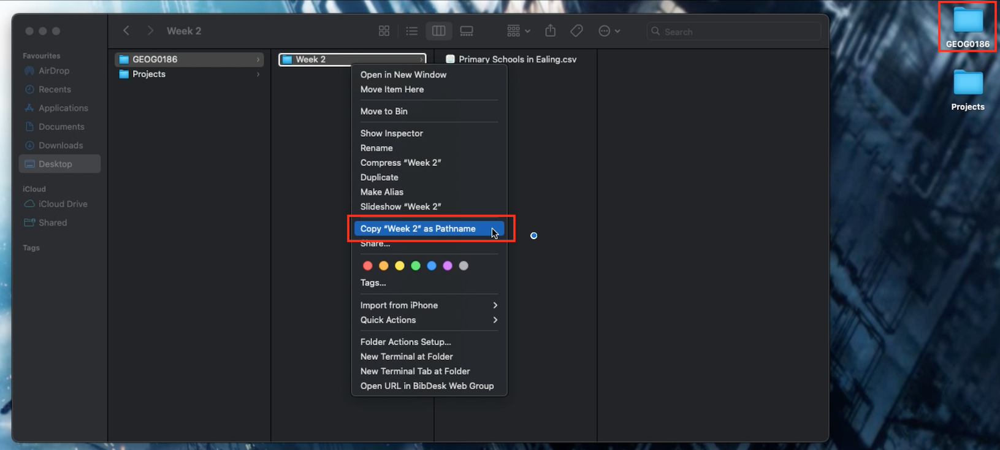
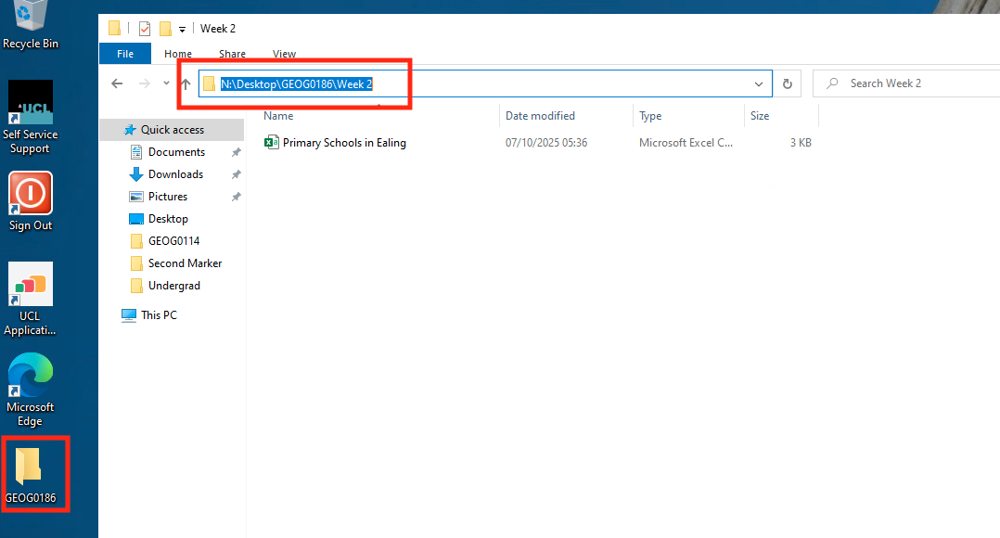
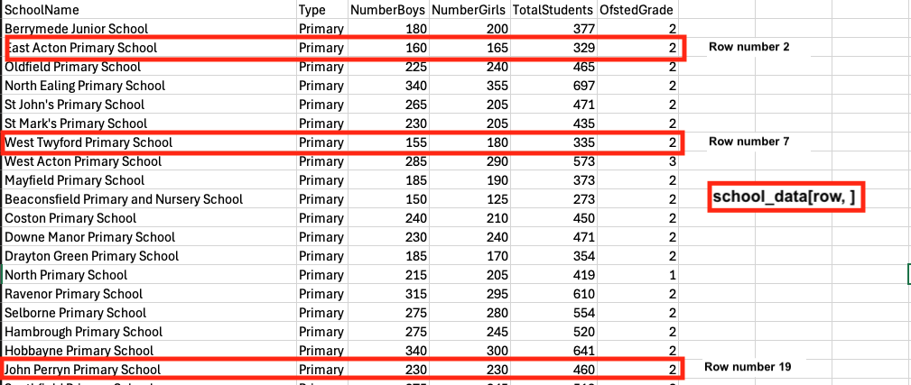
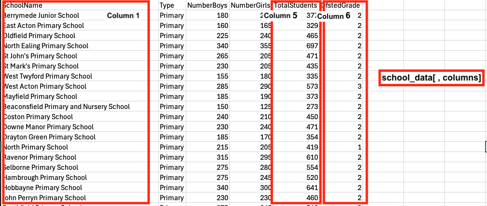
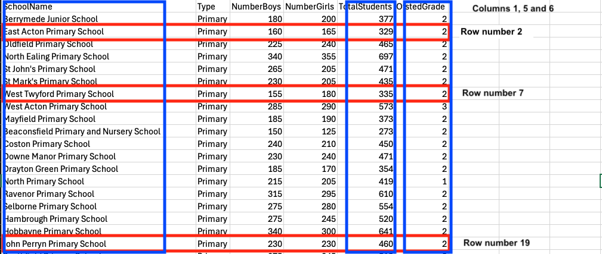
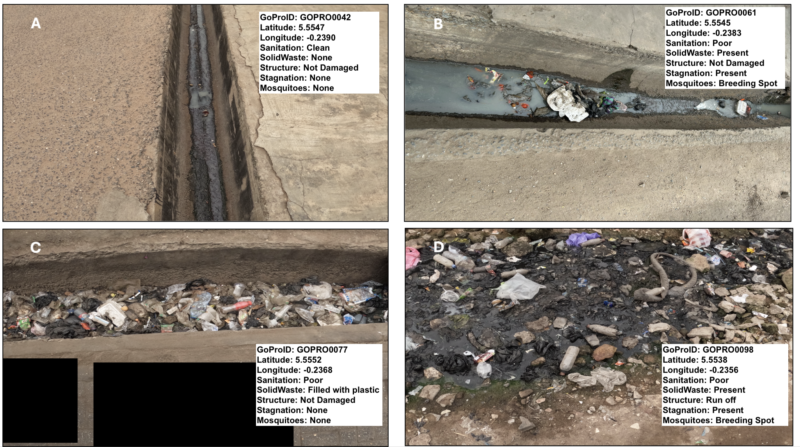

Introduction II
1 Handling Data Structures in RStudio
1.1 Learning objectives
By the end of this tutorial, you will be able to:
- Set your working directory on Mac and Windows
- Import a .csv file into RStudio
- Understand the structure of a data frame (rows and columns)
- Filter data using both numeric and categorical variables
- Combine multiple conditions with logical operators to perform further filtering of data
- Export data back into a .csv file
These objectives, combined with those from last week, serve as a gateway to learning RStudio and building a strong foundation. Let us begin!
1.2 Setting the Working Directory to Datasets (Length: 00:05:24)
Warning
Before we do anything - make sure to have downloaded the dataset for this computer session by clicking [HERE]. It contains the file Primary Schools in Ealing.csv - this comma separated values (CSV) file contains the data needed to follow today’s tutorial.
Instructions In your computer, do the following:
- Create a new folder on your desktop and rename the folder GEOG0186
- Next, create a new sub-folder within GEOG0186 and rename it as Week 2.
- From the downloaded folder Dataset for Week 2, make sure to unzip and transfer ALL the datasets directly to the Week 2 folder.
This part is probably the most important section of this tutorial. We are going to learn how to set the Work Directory. This basically refers to us connecting the RStudio to the folder containing our dataset that we want to import and analyse.
Doing this allows the user to tell RStudio to open data from a folder located somewhere in our computer using something called the Path Location.
The Path Location specifies the whereabouts of the data file(s) stored within a computer. Setting your directory in RStudio, in code, beforehand makes life incredibly easier (than the usual point-and-click approach) in terms of finding, importing, exporting and saving data in and out of RStudio.
To illustrate what a Path Location is – suppose on my desktop’s dashboard on a Mac/Windows there is a folder called GEOG0186, and within that folder, exists another folder called Week 2. Finally, suppose a comma separated value (.csv) data file called Primary Schools in Ealing.csv is store in this folder i.e., Week 2. If via RStudio you want to open this CSV data file located in within the Week 2 folder. You will need to first set the path to Week 2 in RStudio using the setwd() function.
1.2.1 Setting the Path Location on MAC (Length: 00:06:44)
For MAC users, the path location would be written as follows, "/Users/accountName/Desktop/GEOG0186/Week 2". You can access this piece of information simply by:
- Open the folder GEOG0186
- Right-clicking on the folder Week 2 in which the files are stored. A drop-down scroll menu will appear (see image below).

- Hold the Option (
⌥) button on your keyboard down, and click Copy “Week 2” as Pathname - Paste the copied path name into the function
setwd()and run the code
For Mac, the setwd() is as follows:
# set work directory in macs
setwd("/Users/accountName/Desktop/GEOG0186/Week 2")1.2.2 Setting the Path Location on Windows (Length: 00:05:07)
For Windows user (on UCL PCs), its marginally different - the path location to this folder on a Windows machine would be written as follows, "N:/Desktop/GEOG00186/Week 2". You can access this piece of information simply by:
- Open the GEOG0186 folder to reveal the Week 2 folder.
- Open the Week 2 folder where your downloaded data files have been stored.
- Now, click on the browser bar at the top which shows
GEOG0186 > Week 2. This should highlight and show"N:\Desktop\GEOG0186\Week 2"(see image below).

- Now, copy
"N:\Desktop\GEOG0186\Week 2"and paste the path name into thesetwd()function in your R script. - Lastly, change all the back slashes
\in the path name to forward slashes/and run the code. It should look like this:setwd("N:/Desktop/GEOG0186/Week 2").
For Windows, the setwd() is as follows:
# set work directory in windows (using UCL PC)
setwd("N:/Desktop/GEOG0186/Week 2")
# note that on usual Windows OS on a personal computer - the code looks something like:
setwd("C:/Users/accountName/Desktop/GEOG0186/Week 2")If you type the code getwd() and quickly run it through console - if it returns the inputted path location - then you have done this correctly.
Now, let us learn how to import a CSV data into RStudio.
1.3 How to Import a Dataset into RStudio (Length: 00:06:21)
A CSV file (short for Comma-Separated Values) is one of the most common formats for storing data. Each row is a single record or observation. For example, it can be details about a person, household unit, a city, or even disease events; and while each column is a variable (for example, population counts, temperature readings, or region name etc.).
For this exercise, we will be using the Primary Schools in Ealing.csv dataset to build intuition on understanding the basics of data structure.
Since, we have already set the work directory to folder containing this dataset. Importing it into RStudio would be a piece of cake.
To read a CSV file into R, we can use the read.csv() function import it as a data frame object named school_data using the assignment operator (<-):
# Load data into RStudio. The spreadsheet is stored in the object called 'school_data'
school_data <- read.csv(file = "Primary Schools in Ealing.csv")The loaded dataset contains up to 58 primary schools with the following variables:
SchoolName: Name of school in Ealing (character)Type: School classified as a “Primary” school (character)NumberBoys: Total number of boys in a primary school (integer/)NumberGirls: Total number of girls in a primary school (integer)TotalStudents: Total number of students in a primary school (integer)OfstedGrade: Overall school performance where1= “excellent”,2= “good”,3= “requires improvement”, and4= “inadequate” (factor/categorical)
Important
We have covered a lot of the basics in RStudio - i.e., setting the work directory and importing a spreadsheet that is CSV format. The things shown in this section will be used frequently in all future tutorials. So, get used to using setwd() and read.csv().
1.4 Data Structure
1.4.1 Inspecting the Size and Structure (Length: 00:08:16)
One can examine the structure of the imported data with the following basic functions.
str(): tells the user which columns in the data frame are character or numeric variables, and so on.names(): prints the entire names of the columns present in the data framehead(): allows the user to see the first top 10 rows of the data frametail(): allows the user to see the last bottom 10 rows of the data framencol(): tells the user the total number of columns present in the data framenrow(): tells the user the total number of observations (or rows) present in the data framedim(): prints both the total number of observations (or rows) and columns present in the data frame.
Using the following code str() will display the structure of school_data data frame object and some of its contents:
str(school_data)'data.frame': 58 obs. of 6 variables:
$ SchoolName : chr "Berrymede Junior School" "East Acton Primary School" "Oldfield Primary School" "North Ealing Primary School" ...
$ Type : chr "Primary" "Primary" "Primary" "Primary" ...
$ NumberBoys : int 180 160 225 340 265 230 155 285 185 150 ...
$ NumberGirls : int 200 165 240 355 205 205 180 290 190 125 ...
$ TotalStudents: int 377 329 465 697 471 435 335 573 373 273 ...
$ OfstedGrade : int 2 2 2 2 2 2 2 3 2 2 ...Using the following code head() or tail() will display the first or last 10 observations, respectively, in the school_data data frame object:
head(school_data) SchoolName Type NumberBoys NumberGirls TotalStudents
1 Berrymede Junior School Primary 180 200 377
2 East Acton Primary School Primary 160 165 329
3 Oldfield Primary School Primary 225 240 465
4 North Ealing Primary School Primary 340 355 697
5 St John's Primary School Primary 265 205 471
6 St Mark's Primary School Primary 230 205 435
OfstedGrade
1 2
2 2
3 2
4 2
5 2
6 2tail(school_data) SchoolName Type NumberBoys
53 St Vincent's Catholic Primary School Primary 240
54 Edward Betham Church of England Primary School Primary 230
55 Dormers Wells Junior School Primary 205
56 Grange Primary School Primary 415
57 Petts Hill Primary School Primary 125
58 Khalsa VA Primary School Primary 235
NumberGirls TotalStudents OfstedGrade
53 260 498 2
54 240 471 2
55 200 409 3
56 385 800 2
57 130 254 2
58 180 412 2You can inspect the data frame object in a Data viewer by using the View() syntax. This should cause the Data viewer window to open showing the full dataset:
View(school_data)The dataset has 58 rows (primary school observations) and 6 columns (variables). You can use nrow, ncol and dim() functions separately to report the size of your data frame:
# total number of rows
nrow(school_data)[1] 58# total number of columns
ncol(school_data)[1] 6# full size of data frame i.e., total rows and columns
dim(school_data)[1] 58 61.4.2 Basic Manipulation of Data Frame
1.4.2.1 Subsetting using Rows and Columns (Length: 00:17:06)
One can subset or restrict the data frame by specifying which row(s) and column(s) to keep or discard using this standard square bracket syntax dataframe[Row, Column].
Breakdown of dataframe[Row, Column]code:
- The bit in the code that corresponds to
dataframefromdataframe[Row, Column]represents the name data frame object. - Where it states
Rowwithin the square brackets specifies the subsetting, or filter action to be carried out based on rows. - Where it states
Columnwithin the square brackets specifies the subsetting, or filter action to be carried out based on columns.
Let’s take our school_data data frame as an example - if we select the first row (row number 1) and the first column (SchoolName), we have essentially filter out only the school name Berrymede Junior School Primary:
data11 <- school_data[1, 1]
data11[1] "Berrymede Junior School"If you select only the first row (row number 1) and do not specific any numbers for the columns, you will be filtering out the entire row for row number 1:
row1 <- school_data[1, ]
row1 SchoolName Type NumberBoys NumberGirls TotalStudents
1 Berrymede Junior School Primary 180 200 377
OfstedGrade
1 2In the same vein, if you select only the column and do not specific any numbers for the rows, you will be filtering out the entire column (i.e., SchoolName variable) for column number 1 which is the list of all primary school names:
column1 <- school_data[, 1]
column1 [1] "Berrymede Junior School"
[2] "East Acton Primary School"
[3] "Oldfield Primary School"
[4] "North Ealing Primary School"
[5] "St John's Primary School"
[6] "St Mark's Primary School"
[7] "West Twyford Primary School"
[8] "West Acton Primary School"
[9] "Mayfield Primary School"
[10] "Beaconsfield Primary and Nursery School"
[11] "Coston Primary School"
[12] "Downe Manor Primary School"
[13] "Drayton Green Primary School"
[14] "North Primary School"
[15] "Ravenor Primary School"
[16] "Selborne Primary School"
[17] "Hambrough Primary School"
[18] "Hobbayne Primary School"
[19] "John Perryn Primary School"
[20] "Southfield Primary School"
[21] "Allenby Primary School"
[22] "Blair Peach Primary School"
[23] "Clifton Primary School"
[24] "Dairy Meadow Primary School"
[25] "Derwentwater Primary School"
[26] "Durdans Park Primary School"
[27] "Fielding Primary School"
[28] "Gifford Primary School"
[29] "Greenwood Primary School"
[30] "Havelock Primary School and Nursery"
[31] "Horsenden Primary School"
[32] "Willow Tree Primary School"
[33] "Lady Margaret Primary School"
[34] "Little Ealing Primary School"
[35] "Oaklands Primary School"
[36] "Perivale Primary School"
[37] "Stanhope Primary School"
[38] "Viking Primary School"
[39] "Wolf Fields Primary School"
[40] "Featherstone Primary and Nursery School"
[41] "Three Bridges Primary School"
[42] "Montpelier Primary School"
[43] "Tudor Primary School"
[44] "Hathaway Primary School"
[45] "Vicar's Green Primary School"
[46] "Mount Carmel Catholic Primary School"
[47] "Our Lady of the Visitation Catholic Primary School"
[48] "St John Fisher Catholic Primary School"
[49] "St Anselm's Catholic Primary School"
[50] "St Gregory's Catholic Primary School"
[51] "St Joseph's Catholic Primary School"
[52] "St Raphael's Catholic Primary School"
[53] "St Vincent's Catholic Primary School"
[54] "Edward Betham Church of England Primary School"
[55] "Dormers Wells Junior School"
[56] "Grange Primary School"
[57] "Petts Hill Primary School"
[58] "Khalsa VA Primary School" What if we wanted to filter the following rows numbered 2, 7 and 19 from the school_data data frame object as highlighted in the image below?

We can use the combine function i.e., c() to list those numbers in the square brackets:
rows_filter <- school_data[c(2, 7, 19), ]
rows_filter SchoolName Type NumberBoys NumberGirls TotalStudents
2 East Acton Primary School Primary 160 165 329
7 West Twyford Primary School Primary 155 180 335
19 John Perryn Primary School Primary 230 230 460
OfstedGrade
2 2
7 2
19 2Likewise, what if we wanted to filter the following columns numbered 1, 5 and 6 from the school_data data frame object as highlighted in the image below?

We can also use the combine function i.e., c() to list those numbers for the columns within that square brackets:
columns_filter <- school_data[ , c(1, 5, 6)]
columns_filter SchoolName TotalStudents OfstedGrade
1 Berrymede Junior School 377 2
2 East Acton Primary School 329 2
3 Oldfield Primary School 465 2
4 North Ealing Primary School 697 2
5 St John's Primary School 471 2
6 St Mark's Primary School 435 2
7 West Twyford Primary School 335 2
8 West Acton Primary School 573 3
9 Mayfield Primary School 373 2
10 Beaconsfield Primary and Nursery School 273 2
11 Coston Primary School 450 2
12 Downe Manor Primary School 471 2
13 Drayton Green Primary School 354 2
14 North Primary School 419 1
15 Ravenor Primary School 610 2
16 Selborne Primary School 554 2
17 Hambrough Primary School 520 2
18 Hobbayne Primary School 641 2
19 John Perryn Primary School 460 2
20 Southfield Primary School 518 2
21 Allenby Primary School 263 2
22 Blair Peach Primary School 506 2
23 Clifton Primary School 400 2
24 Dairy Meadow Primary School 469 2
25 Derwentwater Primary School 708 2
26 Durdans Park Primary School 528 2
27 Fielding Primary School 891 2
28 Gifford Primary School 866 1
29 Greenwood Primary School 555 2
30 Havelock Primary School and Nursery 434 1
31 Horsenden Primary School 872 2
32 Willow Tree Primary School 759 2
33 Lady Margaret Primary School 671 2
34 Little Ealing Primary School 669 2
35 Oaklands Primary School 552 2
36 Perivale Primary School 467 2
37 Stanhope Primary School 598 2
38 Viking Primary School 275 2
39 Wolf Fields Primary School 421 2
40 Featherstone Primary and Nursery School 722 2
41 Three Bridges Primary School 455 2
42 Montpelier Primary School 682 1
43 Tudor Primary School 453 2
44 Hathaway Primary School 346 4
45 Vicar's Green Primary School 342 1
46 Mount Carmel Catholic Primary School 457 2
47 Our Lady of the Visitation Catholic Primary School 471 3
48 St John Fisher Catholic Primary School 467 1
49 St Anselm's Catholic Primary School 239 3
50 St Gregory's Catholic Primary School 619 2
51 St Joseph's Catholic Primary School 558 2
52 St Raphael's Catholic Primary School 589 2
53 St Vincent's Catholic Primary School 498 2
54 Edward Betham Church of England Primary School 471 2
55 Dormers Wells Junior School 409 3
56 Grange Primary School 800 2
57 Petts Hill Primary School 254 2
58 Khalsa VA Primary School 412 2What if we wanted to filter on rows numbered 2, 7 and 19, as well as columns numbered 1, 5 and 6 from that school_data data frame object as highlighted in the image below?

full_filter <- school_data[c(2, 7, 19) , c(1, 5, 6)]
full_filter SchoolName TotalStudents OfstedGrade
2 East Acton Primary School 329 2
7 West Twyford Primary School 335 2
19 John Perryn Primary School 460 2Not too shabby! So far, you have been shown how to do some create subset of data by filtering rows and columns. Let’s take it up a notch on filtering based on row Logical Operators to create conditions.
1.4.2.2 Subsetting using Logical Operators to Combine Conditions (Length: 00:15:38)
Often, we want to filter based on more than one condition — for example, “cities in England and with a population over 600000”. RStudio uses logical operators to combine these conditions:
| Operator | Meaning | Example | Description |
|---|---|---|---|
== |
Equal to | country == "England" |
True if the country is England |
!= |
Not Equal to | country != "England" |
True if for all except England |
> |
Greater than | population > 600000 |
True if population is above 600000 |
< |
Less than | population < 600000 |
True if population is under 600000 |
>= |
Greater than or eqaul to | population >= 600000 |
True if population is equal to 600000 or more |
<= |
Less than or equal to | population <= 600000 |
True if population is equal to 600000 or less |
& |
AND | country == "England" & population <= 600000 |
Both conditions are true |
| |
OR | country == "England" | country == "Wales" |
True for either England or Wales |
Let’s illustrate with the school_data object. We are interested in primary schools with a total of 500 hundred or more students. This operation is always row-based. We will need to use the $ to call the column TotalStudents and the logical operator for this filter is >=:
schools_500plus <- school_data[school_data$TotalStudents >= 500, ]
schools_500plus SchoolName Type NumberBoys NumberGirls
4 North Ealing Primary School Primary 340 355
8 West Acton Primary School Primary 285 290
15 Ravenor Primary School Primary 315 295
16 Selborne Primary School Primary 275 280
17 Hambrough Primary School Primary 275 245
18 Hobbayne Primary School Primary 340 300
20 Southfield Primary School Primary 275 245
22 Blair Peach Primary School Primary 265 245
25 Derwentwater Primary School Primary 335 370
26 Durdans Park Primary School Primary 275 250
27 Fielding Primary School Primary 480 410
28 Gifford Primary School Primary 435 435
29 Greenwood Primary School Primary 290 265
31 Horsenden Primary School Primary 440 435
32 Willow Tree Primary School Primary 385 370
33 Lady Margaret Primary School Primary 360 310
34 Little Ealing Primary School Primary 345 325
35 Oaklands Primary School Primary 290 260
37 Stanhope Primary School Primary 305 295
40 Featherstone Primary and Nursery School Primary 365 360
42 Montpelier Primary School Primary 350 330
50 St Gregory's Catholic Primary School Primary 305 310
51 St Joseph's Catholic Primary School Primary 295 265
52 St Raphael's Catholic Primary School Primary 325 265
56 Grange Primary School Primary 415 385
TotalStudents OfstedGrade
4 697 2
8 573 3
15 610 2
16 554 2
17 520 2
18 641 2
20 518 2
22 506 2
25 708 2
26 528 2
27 891 2
28 866 1
29 555 2
31 872 2
32 759 2
33 671 2
34 669 2
35 552 2
37 598 2
40 722 2
42 682 1
50 619 2
51 558 2
52 589 2
56 800 2What if were interested in primary schools with an OFSTED score of 1 (Excellent). Again, this operation is row-based and so we will need to use the $ to call the column OfstedGrade and the logical operator for this filter is ==:
schools_ofsted1 <- school_data[school_data$OfstedGrade == 1, ]
schools_ofsted1 SchoolName Type NumberBoys NumberGirls
14 North Primary School Primary 215 205
28 Gifford Primary School Primary 435 435
30 Havelock Primary School and Nursery Primary 245 190
42 Montpelier Primary School Primary 350 330
45 Vicar's Green Primary School Primary 165 180
48 St John Fisher Catholic Primary School Primary 225 240
TotalStudents OfstedGrade
14 419 1
28 866 1
30 434 1
42 682 1
45 342 1
48 467 1Here is an example of combining such logical operators - select schools that have more than 650 students and with an OFSTED score of 2.
# logical operators is >, &, ==
schools_650_ofsted2 <- school_data[school_data$TotalStudents > 650 & school_data$OfstedGrade == 2, ]
schools_650_ofsted2 SchoolName Type NumberBoys NumberGirls
4 North Ealing Primary School Primary 340 355
25 Derwentwater Primary School Primary 335 370
27 Fielding Primary School Primary 480 410
31 Horsenden Primary School Primary 440 435
32 Willow Tree Primary School Primary 385 370
33 Lady Margaret Primary School Primary 360 310
34 Little Ealing Primary School Primary 345 325
40 Featherstone Primary and Nursery School Primary 365 360
56 Grange Primary School Primary 415 385
TotalStudents OfstedGrade
4 697 2
25 708 2
27 891 2
31 872 2
32 759 2
33 671 2
34 669 2
40 722 2
56 800 2I am sure you now get the gist of what is happening here with these logical statements for subsetting, or filtering data accordingly. We are now in the final stretch - let us learn how to save and export a dataset as a CSV spreadsheet.
1.5 Saving your dataset (Length: 00:11:13)
This operation is very easy to perform. Once you have created your filtered data, you can use the following function write.csv() to save it as a new CSV file:
write.csv(schools_650_ofsted2, file = "Filtered_example_data.csv", row.names = FALSE)The above syntax should save a new CSV file named as Filtered_example_data.csv. Do not forget to save your R-script!
1.6 Summary
You have learned the following:
- Set your working directory on Mac and Windows
- Import a .csv file into RStudio
- Understand the structure of a data frame (rows and columns)
- Filter data using both numeric and categorical variables
- Combine multiple conditions with logical operators to perform further filtering of data
- Export data back into a .csv file
2 Worksheet One: Workflow and Generating Data in RStudio
In this worksheet, we will put into practice some of the basics we learned in Introduction I and II. The aim of this worksheet is to transcribe the image data containing stormwater drain infrastructure and sanitation information using the following R code syntax:
- Assignment operator
<- - Combine function
c() - Data frame function
data.frame() - Display data structure of output
str() - Using logical operators
- Save function
write.csv()
Scenario: Stormwater Drainage Survey Data
In Accra, between June and July 2024, we conducted a stormwater drainage survey to identify exposed drainage points along street segments that were clogged with solid waste (e.g., plastics and rubbish) and stagnant water, with the aim of reducing the burden of poor environmental sanitation and the risk of mosquito-borne infestation.
Following information has been captured in annotated images:

Use the information in the white text box of each image to construct a data frame in RStudio.
- Use the
c( )function with assignment operator (<-) to create the following vector objects with the names:
GoProID: it contains the image ID numbersLatitude: it contains the y-coordinate of surveyed locationLongitude: it contains the x-coordinate of surveyed locationSanitation: it contains information about the sanitation state of drainSolidWaste: it describes presence or absence of solid waste materials in drainStructure: it describes whether the structure of the drain was damaged (or not) or it being a “run off” drainStagnation: refers to flow obstruction in drain resulting in it be stagnatedMosquitoes: refers to evidence of mosquito breeding in drain due to condition
- Use the
data.frame()with the assignment operator (<-) to create the data frame objectdrainage_data. - Use the
str()to describe the structure ofdrainage_datadata frame. - Use the following row conditions i.e., drains classified as having Poor sanitary state AND it is a Breeding Spot for mosquitoes at the same time to perform a filter on the
drainage_dataobject. At the same time, limit the filtered data to the following columns:GoProID,Latitude,Longitude,SanitationandMosquitoes
- Use the
write.csv()to save your new filtered dataset.
Important
Please use the answer sheet HERE to insert a screenshot of the dataset, paste the full code syntax, and provide an interpretation of the dataset and workflow. Note that this Worksheet 1, in particular, along with Worksheets 2 and 3, will only be assessed in person, and feedback will also be given in person. Whereas Worksheets 4 and 5 - London Air Quality - will be formatively marked accordingly. You need to submit at least 2 (out of 5) QSkills worksheets in your final portfolio.